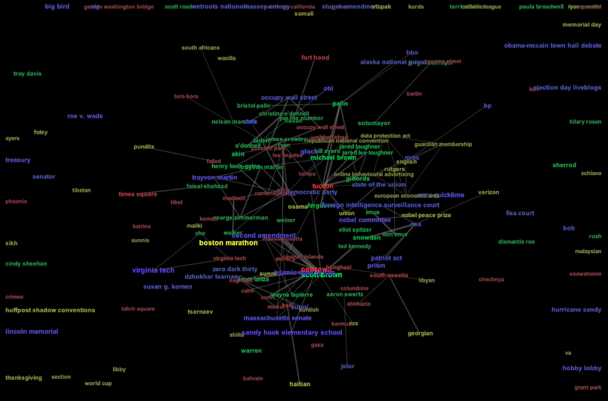
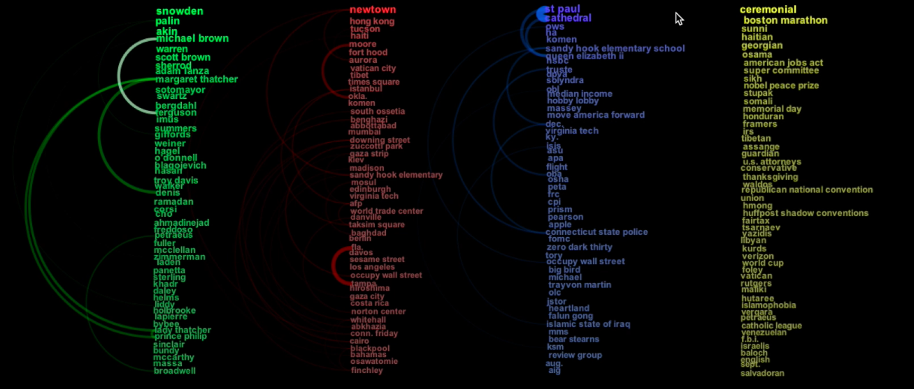
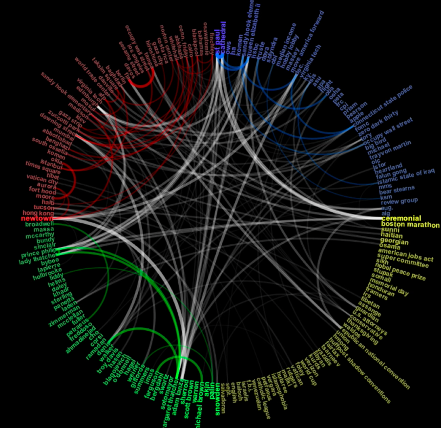
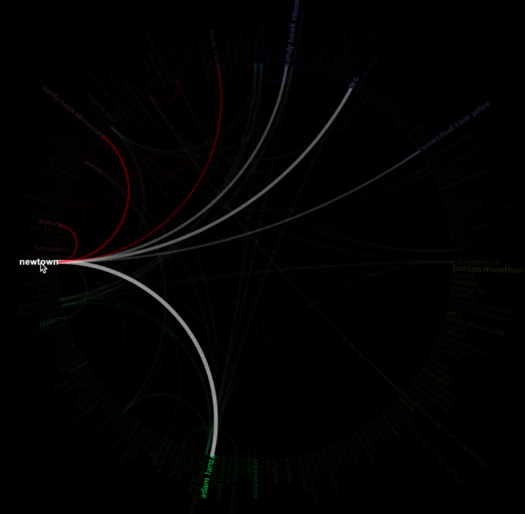

Popular terms from political blogs, such
America Blog
and
Crooks and Liars
. Terms are colored by category: green for people, red for location, blue for organization, and yellow for miscellaneous.


 
https://observablehq.com/@d3/hierarchical-edge-bundling
https://observablehq.com/@d3/chord-dependency-diagram
References:
http://stackoverflow.com/questions/14517446/identify-d3-js-graph
http://euclid.psych.yorku.ca/datavis/gallery/bright-ideas.php
http://www.chrisharrison.net/index.php/Visualizations/BibleViz
http://homes.cs.washington.edu/~jheer/files/zoo/
D3 Arc Diagram
Adjacency matrix of the same data
Force-Directed Graph of the same data
© Last revised: Oct 16th, 2016